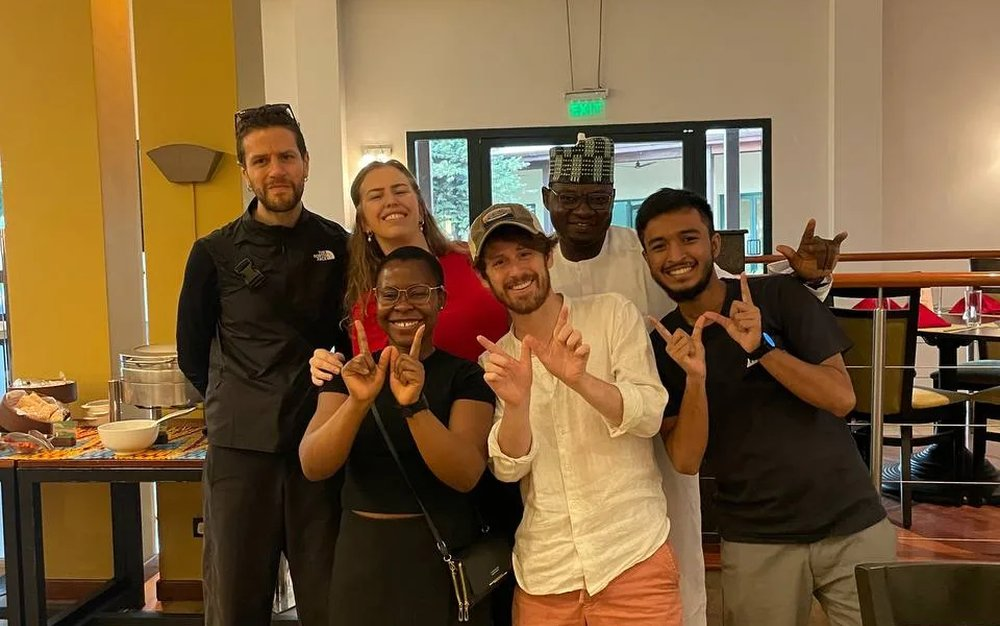
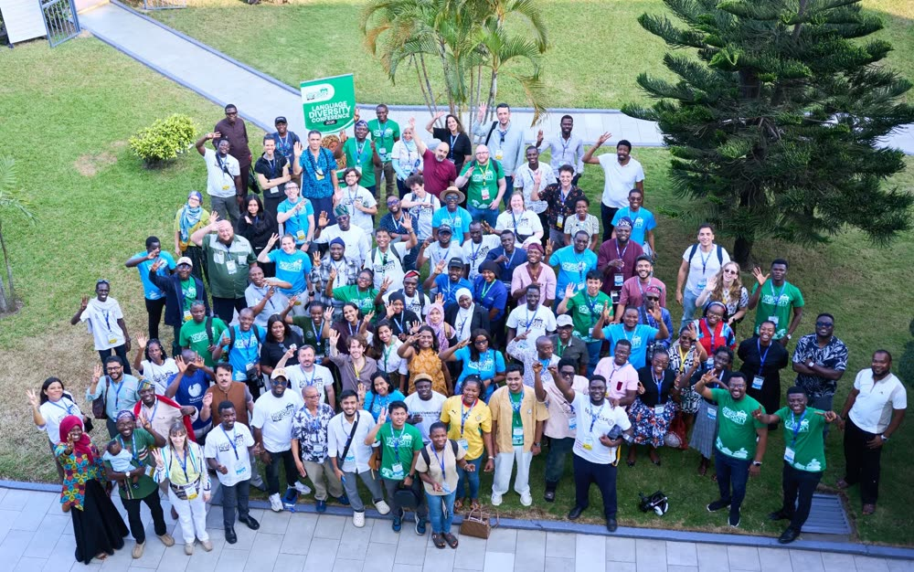
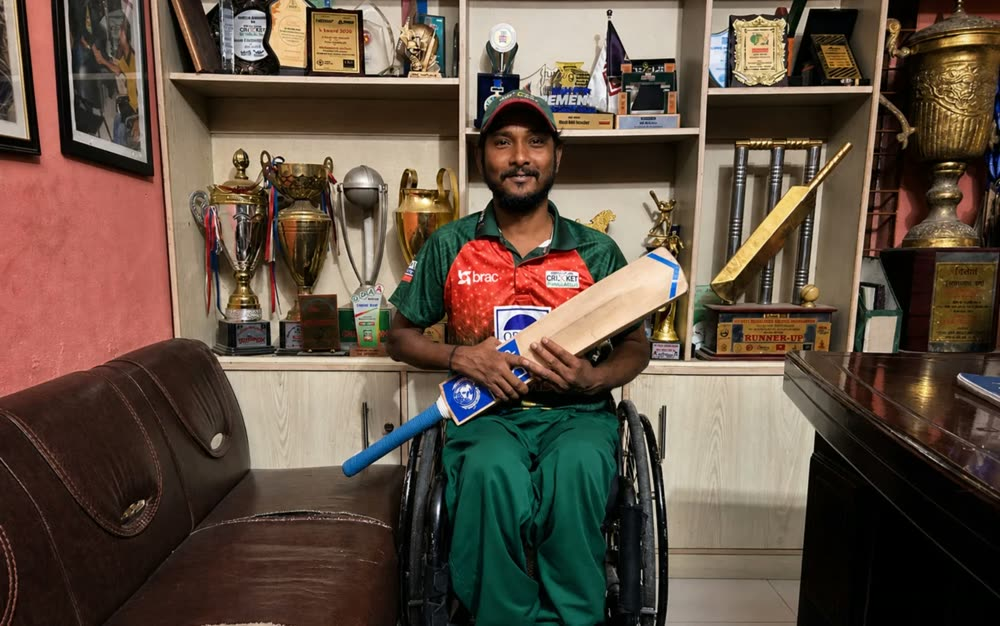
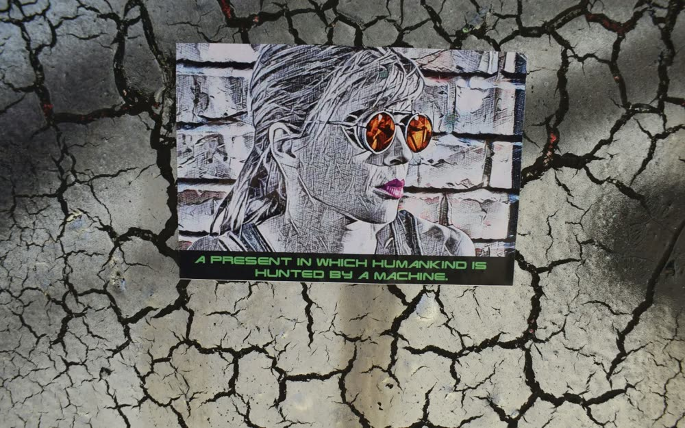
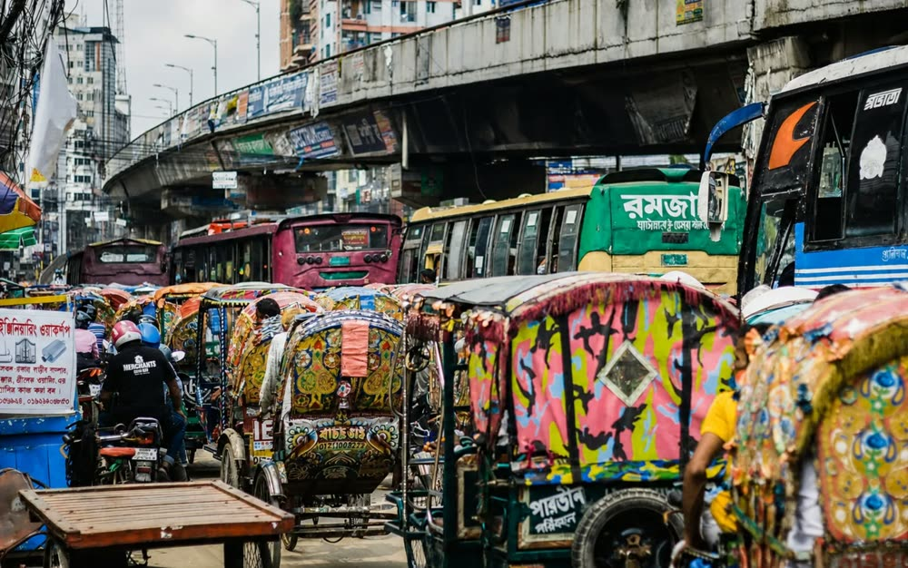
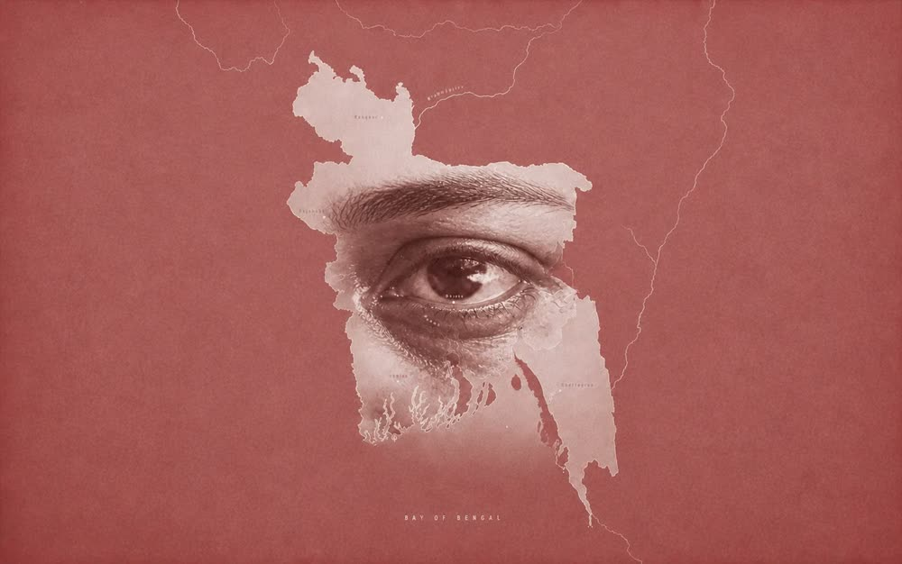
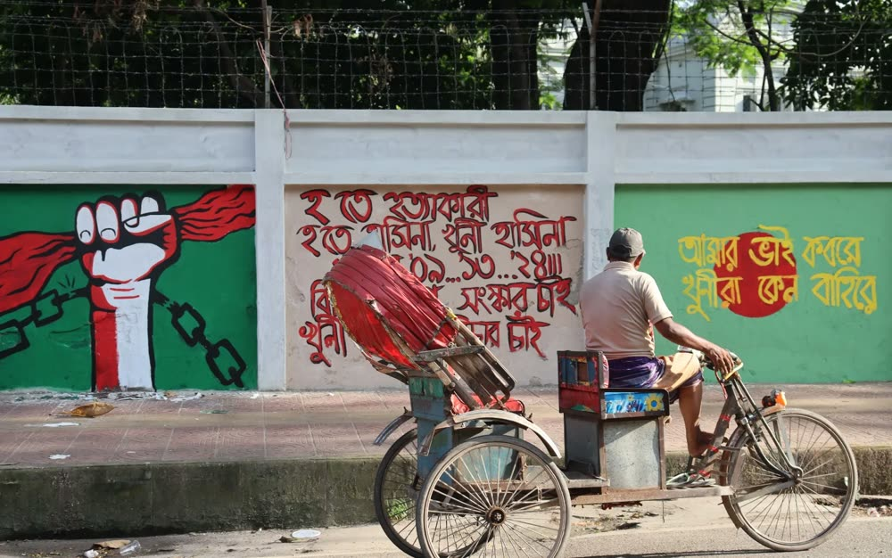
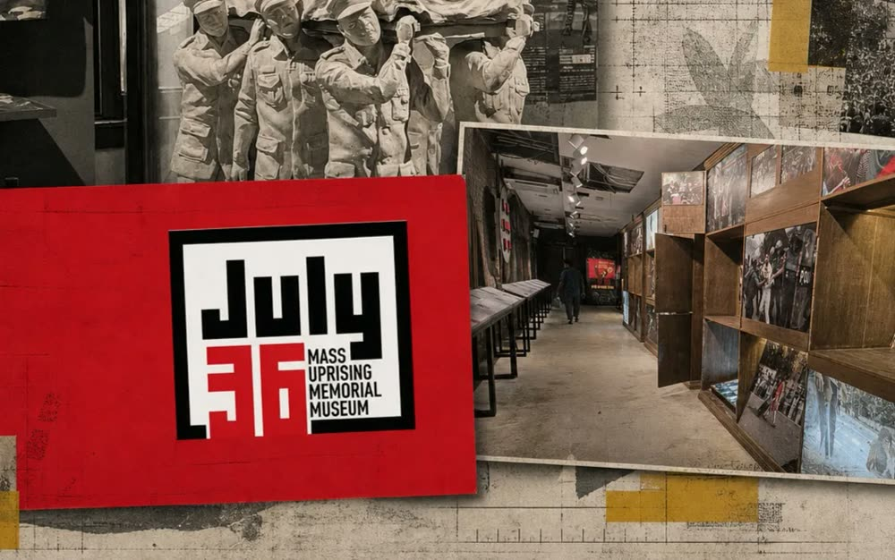

Writing
Features and reports at Nutshell Today on memory and the 2024 uprising, disability, work, endangered languages and the politics of technology.

When silence speaks a language of its own
After losing his hearing in Pfizer’s controversial Trovan trial in Kano, Sani became a teacher and advocate documenting and promoting Hausa Sign Language.
Read it2026
-

Feature22 OctFrom a Golden Pot to the Global Stage
Bangladesh documents Chak, one of its most endangered languages, and its organisers take the work to a conference in Ghana.
-

Feature8 OctFrom crawling to cricket
Polio survivor Mohammad Mohasin founded Bangladesh’s wheelchair cricket movement and now campaigns for public spaces that work for wheelchair users.
-

Feature24 SepTwo truths and a lie: there’s more to the AI apocalypse than you think
Tech executives warn of an AI apocalypse while raising funds and expanding compute. Who profits, and who shapes the rules?
-

Feature2 SepDhaka wants them gone. What do they want?
Dhaka plans to restrict battery-powered auto-rickshaws, and thousands of drivers stand to lose their living.
-

Report25 AugAim to Blind
Shotgun pellets in the July 2024 crackdown caused more than 1,300 eye injuries and left many protesters permanently blind.
-

Report12 AugAre the walls fading?
The murals of the July–August 2024 uprising are being painted over, erased or left to decay. Who keeps the memory?
-

National11 AugJuly Museum opens to crowds but with cracks
The July Museum draws large crowds amid ticketing failures, poor crowd control and arguments over which memories it should keep.
Before Nutshell Today
News writing at Jamuna Television’s web desk (intern), then content executive at Dhaka on Air. Also news editor at Splash. In the Wikimedia movement I write documentation, case studies and reports: Project Korikath, Wiki Loves Folklore 2025, the NDEC Bootcamp case study.